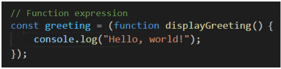
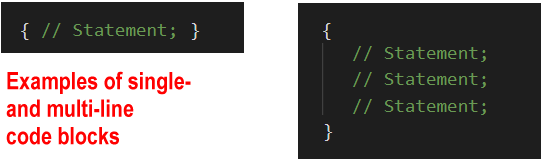

Learning Goals
At the end of this Tutorial, you will be able to:
- Create and call a function declaration.
- Recognise that function declarations are hoisted — they can be called before they are declared.
- Use arguments and parameters to pass values to a called function.
- Return a value from a function back to the calling code elsewhere in the program.
Function Declarations: Exercises
About functions
Functions are the building blocks of a programming language. You can think of a function as a ‘box’ or ‘sub-program’ that stores some code inside it.
In summary:
- A function is a block of code that performs a particular task.
- Whenever the program needs that task to be performed, it invokes (‘calls’ or ‘fires’) the function and runs the code inside it.

Dividing your program into functions brings one huge advantage: You need to write the code inside functions only once – but the program can invoke and run the functions as many times as is needed.
In short, functions are reusable ♻️ code blocks.
Function types
JavaScript offers two main types of functions:
- Function declarations: Most commonly used for longer, stand-alone blocks of code that are called elsewhere in the program. You can see a simple example below.

- Function expressions: Most commonly used for shorter tasks inside conditionals (if), loops (for, while) or other functions. See an example below.

Anonymous functions are examples of function expressions. An arrow function is a shorthand way of writing an anonymous function. See below.

This Tutorial covers function declarations. See the other Tutorials on anonymous functions and arrow functions.
Function names
In a JavaScript program, you can invoke a function by typing its name, followed by a parenthesis (). Usually, developers add a semi-colon ; at the end. For example:
displayMessage();
There is no space between the function name and the parenthesis.
Here are some important points about naming functions in JavaScript:
- Names must be unique: Not every function needs to have a name. (Functions can be anonymous.) But when a function has a name, that name must be unique. No two functions in the same scope may have the same name.
- No spaces or hyphens: Function names may not contain spaces. You cannot use the hyphen character (-) but the underline character (_) is allowed.
- Mixed character case: Developers typically combine upper and lowercase letters in a function name to make the name easier to read. This convention is known as camelCase. For example:
setFontSize()
calculateTax(). - Case sensitivity: Function names are case-sensitive. The following are two different function names:
UpdateTotal()
updateTOTAL()
It’s always a good idea to start a function name with an imperative verb (an action word) that describes what the function does. For example:
addSomething()
sumSomething()
calculateSomething()
moveSomething()
displaySomething()
Functions and code blocks
In JavaScript, a code block is some code inside curly braces {}. The code of a function is called the function body and can contain or more statements.
Typically, developers indent the code block from the left by two spaces to make the function easier to read.
Function declarations
One way to create a function is to declare it with the relevant JavaScript keyword, much in the same way you would declare a variable.
- You declare variables with the var, const or let keywords.
- You declare a function with the function keyword.
See the sample function declaration below:
// Function declaration function displayGreeting() { console.log("Hello, world!"); }
Here is the syntax of a function declaration:
- Begins with the function keyword

- Then, after a space, comes the function name

- Then, without a space, is a pair of parentheses (). This may include one or more parameters separated by commas.

- Finally, inside a code block {}, you type the function's code.

You would call this function as shown below.

Function declarations and coding styles
Developers write function declarations in slightly different ways.
- The space after the pair of parenthesis () and before the opening brace { of the code block is optional.
- And some developers begin the code block {} on a new line. All three examples below will run correctly.

Function declarations are hoisted
A function declaration creates a function variable (with the same name as the function name) in the current scope.
Function variables are hoisted. As a result, you can call them before or after they are declared. Both of the code samples below will run without error.

Since a function declaration is not an executable statement, it is not common to end it with a semi-colon.
The role of the function declaration syntax is to create standalone functions. Function declarations are expected inside the global scope or direct the scope of other functions. It is not recommended to use function declarations inside conditionals (if) and loops (while, for).
Exercise 8.1: Write a function declaration to display a message
Write a function that displays a short message in the JavaScript Console. Verify that the function declaration is hoisted by calling the function before declaring it.
Exercise 8.2: Write a function declaration to join two strings
Place the code that joins the two strings in the input fields inside a function declaration, and outputs the result to the web page and JavaScript Console.
Passing values to functions
Typically, you will want to provide some information to a function for the function to perform its task. You can think of this as ‘feeding’ the function.
This is called passing a value to the function. You pass a value – or maybe multiple values – to a function when you invoke (call or fire) the function.
Functions and parameters
A variable that stores the expected input to a function is called a parameter.
- You specify the parameter(s) expected by a function when you create the function.
- You type the parameter(s) inside the parenthesis () of the function.
See the examples below.

A function may accept multiple parameters, separated by a , comma. The space between parameters is optional.

Functions and arguments
Parameters are what you specify when you create the function. Arguments are what you pass to the function when you invoke (call or fire) the function.

In the example above:
- A function is created with a parameter named age.
- When the function is called by the program, an argument of 21 is passed to the function.
Default function parameters
What happens if the number of arguments you pass to a function is different to the number of parameters the function expects to receive?
In JavaScript, a parameter of a function has a default value of undefined.
This means that if you fail to pass the expected argument when calling the function, the function gives the missing parameter this default value. See the example below.
function showGreeting(message) { console.log(message); } showGreeting(); // Outputs 'undefined'
You can use the assignment operator = to set a default value for a function parameter as follows.
function showGreeting(message='Hello, world!') { console.log(message); } showGreeting(); // Outputs 'Hello, world!' showGreeting('Hi, there'); // Outputs 'hi, there!'
If too many arguments are provided when a function is called, the function will simply ignore the excess arguments.
Consider the following function that finds the average of three numbers.
averageThreeNums = (x,y,z) => { const result = (x + y + z)/3; console.log(`Average of three numbers is: ${result}`); } averageThreeNums(1,2,3,4,5,6); // ignores 4, 5, 6 averageThreeNums(1,2,3,4,5); // ignores 4, 5 averageThreeNums(1,2,3,4); // ignores 4 averageThreeNums(1,2,3); // result is always '2'
Exercise 8.3: Pass an argument when calling a function
Call a function and pass a number argument to it, and output the result to the JavaScript Console.
Functions and return values
All JavaScript functions return a value to the code that invoked (called or fired) them – even if the return keyword is not included in the function.
A function that does not return anything (for example, a function that just outputs to the browser console) will return a value of undefined by default.
Consider the functions below.
// Function declaration with parameters function addNumbers(a, b) { console.log(`Output: ${a + b}`); } // Function call with arguments addNumbers(1, 2);
Note the following:
- The function is designed to accept two input values, add them, and output the result to the web browser console.
- The functions does not return a value back to anywhere else in the program. (Or, more exactly, it returns a value of undefined.)
General rule: You only need to return something from a function if that returned value will be used elsewhere in the calling program.
Accessing return values from functions
Below you can the same function as above. The difference is that it now returns a value back to the calling program.
// Function declaration with parameters function addNumbers(a, b) { console.log(`Output: ${a + b}`); return (a + b); } // Function call with arguments addNumbers(1, 2);
But how can the calling program access these return values?
The answer is to create a variable in the calling program to store the value returned by each function. See the code below.
// Function declaration with parameters function addNumbers(a, b) { console.log(`Output: ${a + b}`); return (a + b); } // Function call with arguments // Includes variable to access the function's returned value let result = AddNums(1, 2); console.log(`Returned result: ${result}`);
Exercise 8.4: Return a value from a called function
Write a function that calls a random number generator function, and output the result to the web page.
Global, function and block scope
The word scope means the availability of a variable or other item in a particular area of a program.
- Global scope: There is only one global scope in a JavaScript program. This is the area outside any functions in the program.
 Variables defined in the global scope can be accessed and altered from any function or block scope anywhere in the program.
Variables defined in the global scope can be accessed and altered from any function or block scope anywhere in the program. - Local scope: Variables declared inside a function are local to that function.
 Every function has its own scope. The same variable name can be used in different functions because local variables are not accessible across functions.
Every function has its own scope. The same variable name can be used in different functions because local variables are not accessible across functions.
Local scope can be divided into function scope and block scope.
Function scope
Whenever you declare a variable in a function, the variable is visible only within the function. You cannot access it outside the function.
var is the keyword to define a variable for function-scope accessibility.
Block scope
Block scope is the area within if and switch conditions, and within for and while loops.
As a general rule, whenever you see parenthesis {}, it is a code block.
The const and let keywords enable you to declare variables in the block scope. These variables are accessible only within their code blocks.